Crimping Ethernet Cables
In this article, you'll all about crimping ethernet cables!
What is crimping an ethernet cable?
Crimping an ethernet cable is the process of attaching connectors onto the ends of ethernet cables. This process is also called 'RJ45 crimping' because RJ45 is the name of the connectors that are used for ethernet cables, and they are what is being crimped.
Why?
Setting up networks involves setting up long ethernet cable connections between different devices. Instead of buying premade ethernet cables of varying lengths (e.g. 5ft, 10ft, 50ft, etc.), it's more practical to just have a big spool of cabling that we can roll out and cut to the exact length we need.
Therefore we need to be able to attach RJ45 connectors to the ends of these cut cables so that we can actually plug them in!
Crimping Kit
Here are some tools you should have in your crimping kit!
RJ45 Crimping Tool
An RJ45 crimping tool is the most essential tool. Although it's technically possible to crimp ethernet cables without this specialized tool, it's not very practical for crimping lots of cables.
Its primary utility is to do the actual 'crimping' part of compressing/crimping the tiny gold pins in the RJ45 connector onto the ethernet cables. It also has blades that can be used to cut or strip wires.
Cable Stripper
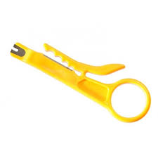
Cable strippers are used to take off the protecting shielding around cables and expose the inner wires. You can also do the same thing with a simple blade or pair of scissors. The trickiest part about stripping cables is trying to avoid cutting the inner wires!
RJ45 Connectors
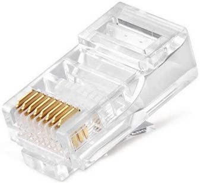
RJ45 connectors are required for crimping because they feature the 8 golden pins that get crimped onto the 8 wires of the ethernet cable. They are what get plugged into ethernet ports! They also feature a latch/clip that locks the ethernet cable into the port once it is plugged in.
RJ45 Boots
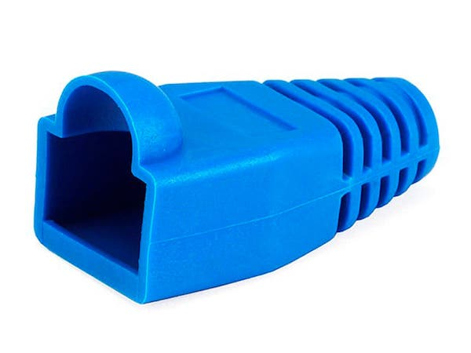
RJ45 boots can be optionally used to protect the RJ45 connector. It provides insulation and prevents the cable from being breaking easily. They have to put slipped onto the cable before you put on the RJ45 connectors though!
RJ45 Cable Tester
RJ45 cable testers allow you to guarantee that you did the job correctly!
They have two pieces that separate from each other, and you plug each end of your crimped ethernet cable into the port on each piece. Then you turn it on and the cable tester will test the connection for all 8 pins. If there are any missing lights on any of the pins, it means that you messed up somewhere and have to restart!
How to Crimp an Ethernet Cable
Assuming you have a crimping kit and an ethernet cable that needs to be crimped, here are all the steps!
Step 0) Slip on the RJ45 boot (optional)
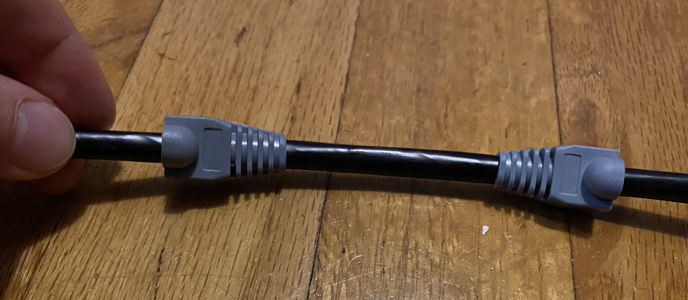
Step 1) Strip the cable
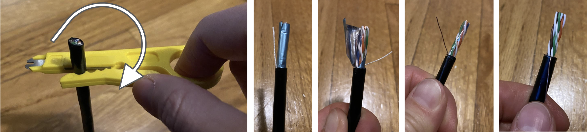
- Push the cable into the razor slot of the strip tool and turn it around the cable to make an even cut around the sheath. Careful not to nick the wires inside!
- Unwrap the blue foil shielding and plastic to uncover the twisted wire pairs.
- Push the copper grounding wire to the side. (Ignore the white string.)
Step 2) Organize the wires
In this step, you'll be taking the 8 colored wires inside the ethernet cable and putting them into the correct ordering of colors.
NOTEThis is the hardest part of crimping! The wires are small and are hard to control. Take your time and make sure you do this step correctly! Otherwise you might have to go back and restart.
Step 2.1) Untwist the wires
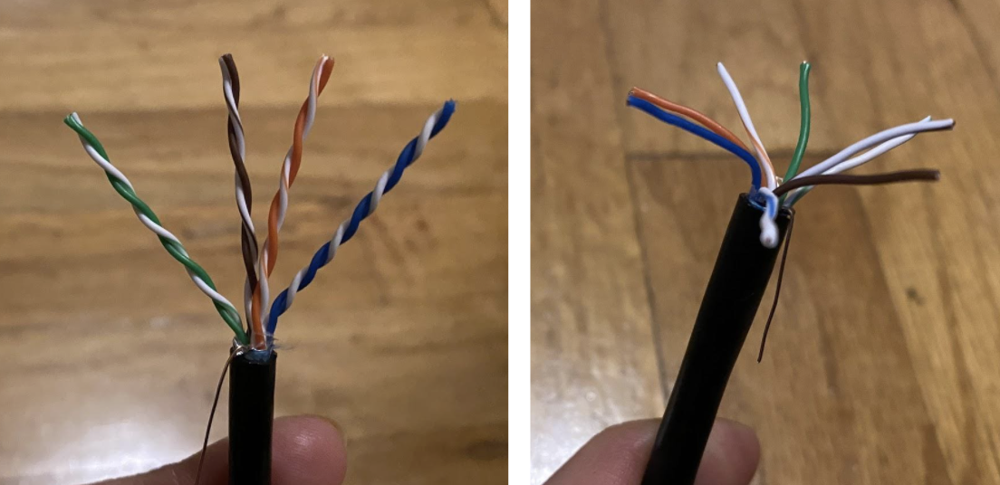
There should be 4 pairs of wires: green, brown, orange, and blue. Each pair has a solid-colored wire and a striped-colored wire. Untwist these pairs and separate them into the 8 wires.
Step 2.2) Straighten out wires
After untwisting the wires, they are probably still kinked and look like they want to be twisted. In this step, you should carefully grab all the wires and try to straighten them out by pulling on them. This will prevent the wires from moving around later on.
WARNING Don't break off the wires!
Step 2.3) Lay out wires in order
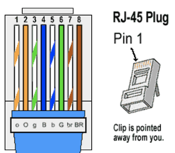 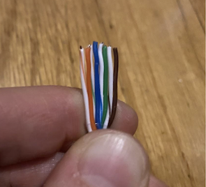
With your straightened out wires, put them into the correct order! Make sure that the wires are all flat and in line with each other.
The ordering for these wires is: 1. Striped orange 2. Solid orange 3. Striped green 4. Solid blue 5. Striped blue 6. Solid green 7. Striped brown 8. Solid brown
TIP After laying them out in order, straighten them out again as a group! This will help keep the wires together.
Step 2.4) Trim the wires
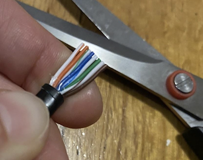
Trim the wires evenly to about 1/2 inch in length using scissors or the blade of your crimping tool. You want to make sure you have enough room for the wires to reach the end of the RJ45 connector. But also try to have room for the shielding of the cable to be inserted into the connector too.
TIP You can put the wires side-by-side to the RJ45 connector to see how long you should cut it. Look at the next step to see what the final product looks like.
TIP If you don't have the shielding inside of the connector, it makes it easier for the wires to snap off later, which is bad.
TIP Make sure that you cut the wires evenly!
Step 3) Slide wires into RJ45 connector
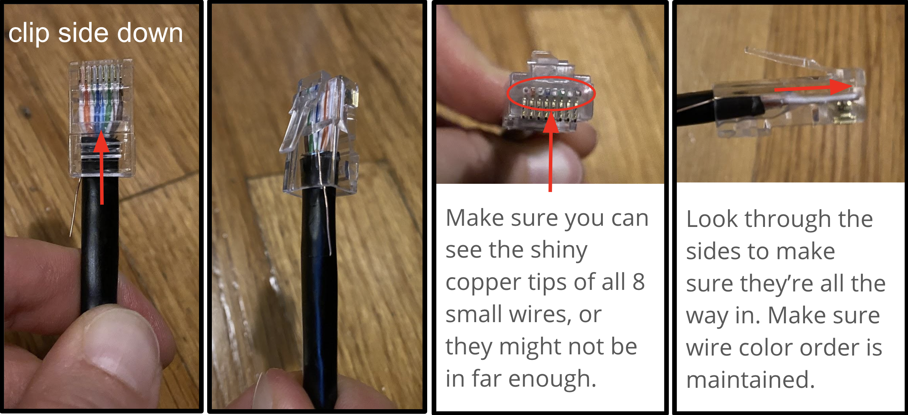
Carefully slide your 8 wires into the connector. Make sure that the clip is facing away from you! If it is really hard to slide it into the connector, you probably didn't straighten out the wires enough in step 2.2 or 2.3.
MORE INFO Inserting the wires with the clip facing away from you is the standard. However, you could technically do it in 'reverse' and insert the wires with the clip facing you, as long as you do it on both ends of the cable. You shouldn't do this in practice though because others would get confused when looking at your cable.
Step 4) Crimp it
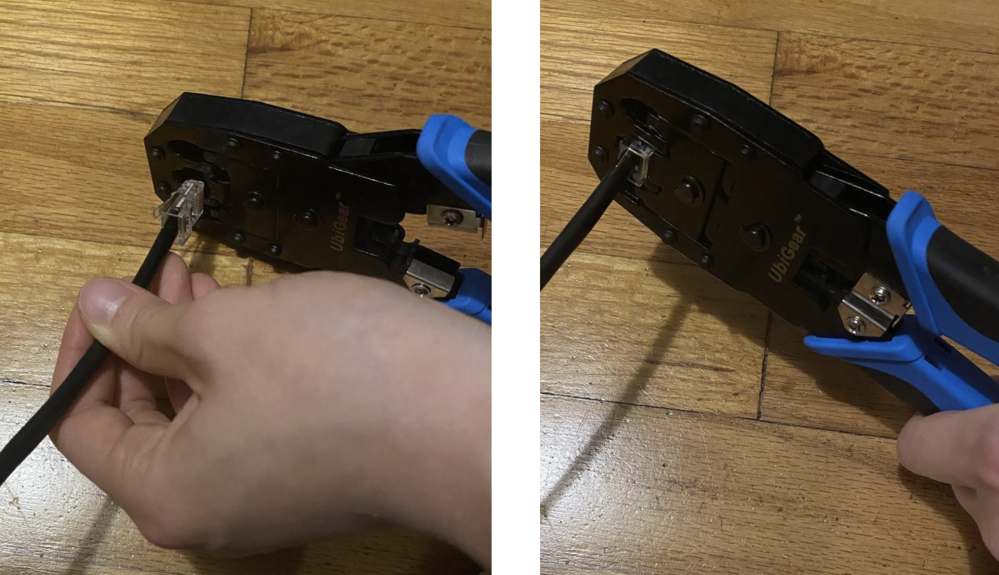
Push the RJ45 connector into the slot of your crimping tool for RJ45 connectors. The slot should be labeled something like "8P" for the 8-pin RJ45 connector that you're using.
In this step, you're doing the actual 'crimping' part and crimping/compressing/stabbing the 8 golden pins on the RJ45 connector into the 8 colored wires.
TIP Squeeze as hard as you can! You need to make sure that all 8 pins are crimped.
Step 5) Test it
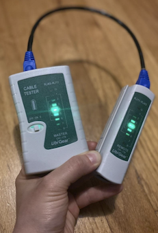
Slide the two pieces of the tester apart and plug each of the cable ends into either piece. Turn the switch to “On” or “Slow.” If it's working, all 8 numbers should be flashing green.
If any of them are not showing green, it means something is wrong and you have to redo it! The RJ45 connector can't be reused once it's crimped, so you should just cut the end off and start back at step 1.
If everything is green, then you're done! If you had a cable boot, you can push the boots onto the RJ45 connector now.
Resources
Workshop Slides
Videos
- Crimping Tutorial (2 mins)
- Cable Testing
- Only need first 7 minutes for the basics
Websites
- Color Coding Diagrams
- Crimping Comic
- From People's Open Network + sudomesh
{kind=link}
Shopping
- Crimping Kit ($23)
- Comes with a nice case
- Might need to buy your own batteries for cable tester
- Crimping Kit ($17)
- Might need to buy your own batteries for cable tester